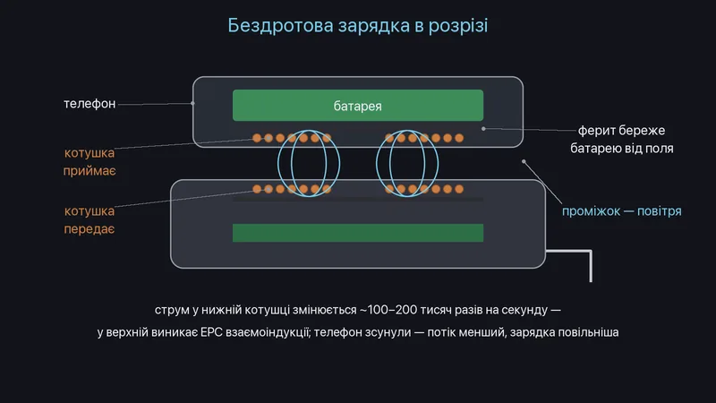
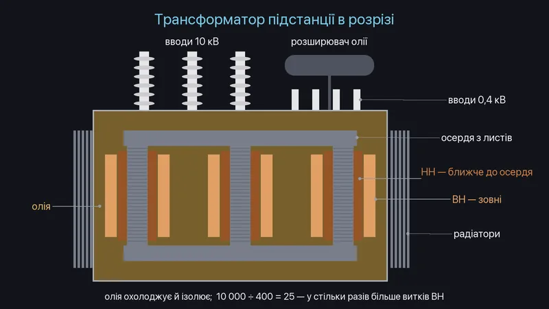
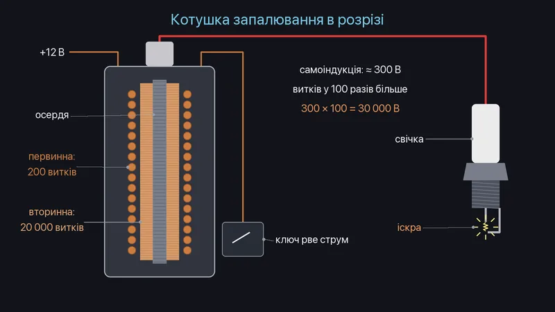

Трансформатор: будова, принцип роботи і коефіцієнт трансформації
Дві котушки на спільному залізі — і з 230 вольтів виходить 36, а з 10 000 — 400. Розбираємо, чому напруги відносяться як витки, що всередині трансформатора підстанції і як розв'язувати задачі на коефіцієнт трансформації.
Зміст
Навіщо трансформатор
У сирому котловані ручний інструмент і переносні лампи живлять від 36 або 24 вольтів: у вологому місці 230 вольтів можуть убити. А з мережі приходять саме 230. Знизити напругу без втрат на нагрівання, як це зробив би резистор, уміє лише трансформатор.
Він же піднімає напругу на електростанції до сотень кіловольтів і опускає її на підстанції біля будинку. Працює трансформатор на електромагнітній індукції — і лише на змінному струмі. Чому саме так — нижче.
Взаємоіндукція: дві котушки поруч
Постав дві котушки поруч. Змінний струм у першій створює змінний магнітний потік, частина якого пронизує другу. За законом Фарадея в другій котушці виникає ЕРС — електрорушійна сила. Це взаємоіндукція.
ЕРС у другій котушці пропорційна швидкості зміни струму в першій. Коефіцієнт M — взаємна індуктивність, у генрі (Гн). Вона однакова в обидва боки: змінний струм у другій котушці наведе в першій ЕРС з тим самим коефіцієнтом.
Чому потрібен саме змінний струм: постійний струм створює постійний потік, а ЕРС індукції виникає лише тоді, коли потік змінюється. На постійному струмі вторинна обмотка мовчить, а первинна — це просто дріт з малим опором, і струм у ній стає великим: обмотка перегрівається.

Взаємоіндукція працює й без заліза. Бездротова зарядка телефону — це дві плоскі котушки: одна в підставці, друга в телефоні. Струм у нижній змінюється 100–200 тисяч разів за секунду, частина його потоку проходить крізь верхню котушку, і там виникає ЕРС. Пластинка фериту за котушкою не пускає поле до батареї. Зсунув телефон — крізь його котушку проходить менше ліній, і зарядка сповільнюється. Щоб зв'язок був сильним, котушки надягають на спільне залізне осердя — так і виходить трансформатор.
Принцип роботи: чому напруги відносяться як витки
Трансформатор — дві обмотки на спільному феромагнітному осерді. Первинну (N₁ витків) підключають до мережі, до вторинної (N₂ витків) — споживача.
Осердя збирає майже весь потік, тож потік крізь кожен виток обох обмоток однаковий. Тоді й ЕРС на один виток однакова, і виходить ланцюжок:
Відношення k — коефіцієнт трансформації.
- k > 1 — у вторинній більше витків, напруга підвищується: підвищувальний трансформатор.
- k < 1 — витків менше, напруга знижується: знижувальний.
Увага до означення k. Тут k = N₂ / N₁. У багатьох шкільних підручниках і довідниках з електротехніки коефіцієнт означають навпаки: k = N₁ / N₂ = U₁ / U₂ — і тоді k > 1 означає знижувальний трансформатор. Обидва записи правильні, важливо, яке означення в твоєму підручнику. Перевіряй за змістом: напруга більша там, де більше витків.
Струм і потужність
Ідеальний трансформатор не гріється, тож потужність на вході дорівнює потужності на виході:
Напруга знижується — струм у стільки ж разів зростає. Тому у вторинній обмотці знижувального трансформатора дріт товстий, а в первинній — тонкий. Справжній трансформатор трохи гріється: дріт обмоток має опір, а в осерді течуть вихрові струми й осердя перемагнічується. ККД (коефіцієнт корисної дії) великих трансформаторів — понад 98 %, малих — помітно менше, 80–95 %.
Будова трансформатора: підстанція в розрізі

Так виглядає трансформатор міської підстанції, що знижує 10 000 вольтів до 400:
| Частина | Що робить |
|---|---|
| осердя з тонких листів сталі | проводить магнітний потік; листи ізольовані один від одного, щоб вихрові струми були слабкі |
| обмотка низької напруги (НН), 400 В | ближче до стрижня осердя |
| обмотка високої напруги (ВН), 10 кВ | зовні, з більшою кількістю витків |
| бак з олією | олія ізолює обмотки й забирає тепло |
| радіатори | ребра, крізь які олія віддає тепло повітрю |
| фарфорові вводи | виводять кінці обмоток з бака: високі — для 10 кВ, низькі — для 0,4 кВ |
| розширювач | бачок над баком, куди йде олія, коли нагрівається й розширюється |
Скільки витків на високій стороні? Напруги відносяться як витки:
На високій стороні витків у 25 разів більше.
▶ Фізика 22 — лекція «Електромагнітні явища» — з 15:12: Взаємоіндукція і трансформатор
Навіщо лініям електропередачі висока напруга
Ту саму потужність P можна передати меншим струмом, якщо підняти напругу: I = P / U. А втрати на нагрівання проводів залежать від квадрата струму:
Підняли напругу вдесятеро — струм упав удесятеро, а втрати — у сто разів.
Приклад. Передаємо 1 МВт лінією з опором проводів 10 Ом.
| Напруга | Струм I = P / U | Втрати ΔP = I² · R | Частка втрат |
|---|---|---|---|
| 10 кВ | 10⁶ / 10⁴ = 100 А | 100² · 10 = 100 кВт | 10 % |
| 100 кВ | 10⁶ / 10⁵ = 10 А | 10² · 10 = 1 кВт | 0,1 % |
Тому на електростанції підвищувальний трансформатор піднімає напругу до сотень кіловольтів, на підстанціях знижувальні опускають її поетапно, а до будинку приходять 230 вольтів.
Самоіндукція: родич трансформатора
Котушка наводить ЕРС не лише в сусідній котушці, а й у собі: струм створює потік крізь її ж витки, і коли струм змінюється — виникає ЕРС самоіндукції:
L — індуктивність котушки, у генрі. Самоіндукція не дає струму ні швидко зрости, ні швидко зникнути.
Чому іскрить вимикач. Котушка з індуктивністю L = 2,5 Гн (з залізним осердям), струм I = 2 А, вимикач розриває коло за Δt = 1 мс:
Близько п'яти тисяч вольтів на контактах вимикача — повітря між ними пробивається, і виникає дуга. Тому автомати в щитку мають дугогасні камери, а великі двигуни вмикають через плавні пускачі.

Котушка запалювання в автомобілі поєднує обидва ефекти. На осерді дві обмотки: первинна — близько 200 витків, вторинна — близько 20 000. Ключ різко обриває струм від акумулятора, і самоіндукція дає на первинній близько 300 В. Вторинна має витків у 20 000 / 200 = 100 разів більше, тож напруга на ній 300 · 100 = 30 000 В — досить, щоб пробити проміжок у свічці.
Розв'язуємо задачу
Трансформатор для лампи 12 В
Первинна обмотка: U₁ = 230 В, N₁ = 1 150 витків. До вторинної підключено лампу 12 В потужністю P = 60 Вт. ККД трансформатора η = 0,95. Знайти кількість витків вторинної обмотки N₂, струм вторинної I₂ і струм первинної I₁.
- Витки: N₂ = N₁ · U₂ / U₁ = 1 150 · 12 / 230 = 60 витків. Коефіцієнт k = 12 / 230 ≈ 0,052 — знижувальний.
- Струм лампи: I₂ = P / U₂ = 60 / 12 = 5 А.
- Потужність, яку трансформатор бере з мережі, більша на втрати: P₁ = P / η = 60 / 0,95 ≈ 63,2 Вт.
- Струм первинної: I₁ = P₁ / U₁ = 63,2 / 230 ≈ 0,275 А.
- Перевірка: I₁ / I₂ ≈ 0,275 / 5 ≈ 0,055 — трохи більше, ніж N₂ / N₁ ≈ 0,052. Різниця — саме ті 5 % втрат.
Відповідь: N₂ = 60 витків; I₂ = 5 А; I₁ ≈ 0,275 А.
Ще одна для самоперевірки. Первинна обмотка — 1 150 витків на 230 В. Скільки витків потрібно у вторинній, щоб живити інструмент від 36 В? Відповідь: 1 150 · 36 / 230 = 180 витків.
▶ Фізика 22, практикум — 12 задач з розв'язанням — з 17:07: Задача 11. Трансформатор для лампи 12 В
Де трапляються трансформатори
- зарядні пристрої й блоки живлення — від телефона до ноутбука;
- зварювальні апарати: низька напруга й великий струм;
- прогрів бетону, ґрунту й труб узимку;
- живлення кранів, компресорів, бетонозмішувачів на будмайданчику;
- знижувальні трансформатори на 36 і 24 В для ручного інструменту й освітлення у вологих місцях;
- підстанції й електростанції.
Коротко
- Трансформатор працює на взаємоіндукції і лише на змінному струмі.
- U₂ / U₁ = N₂ / N₁ = k: напруга більша там, де більше витків. Перевіряй, як означено k у твоєму підручнику.
- Ідеальний трансформатор: U₁ · I₁ = U₂ · I₂ — напруга вниз, струм угору.
- Осердя з тонких ізольованих листів — проти вихрових струмів; олія ізолює й охолоджує.
- Висока напруга в ЛЕП: втрати ∝ 1 / U², тож ×10 напруги — ÷100 втрат.
Звідки береться сама ЕРС індукції — у статті «Закон Фарадея і правило Ленца».